🤖 Nouveau : Intelligence Artificielle
EditeurPanovisu peut maintenant générer automatiquement des descriptions pour vos panoramiques !
Premiers pas ou comment réaliser un visite en 5 minutes
Noubliez pas de sauvegarder votre projet régulièrement
Dans l'onglet visite
-
Charger les panoramiques (menu Visite => Ajouter panoramiques ou Ctrl+A(PC) ou Cmd+A(Mac))
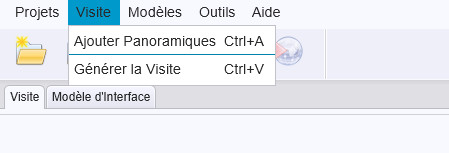 -
Choisir le panoramique d'entrée
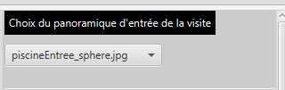 -
Choisir le titre de chacun des panoramiques
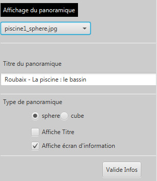 -
Créer les liaisons entre les panoramiques :
-
clic bouton gauche sur la vue panoramiques pour choisir l'emplacement du Hotspot
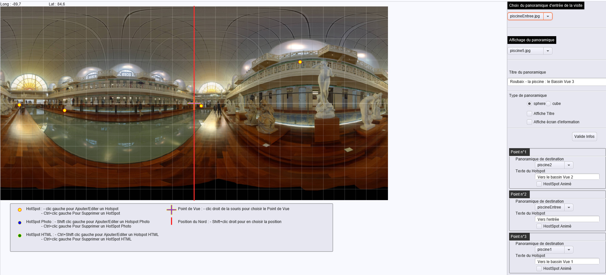
-
choisissez le panoramique lié par le hotspot en clic bouton gauche sur son image (vous pourrez l'éditer en recliquant sur le point ou en choisissant
le panoramique lié par l'intermédiaire de la boite de choix).
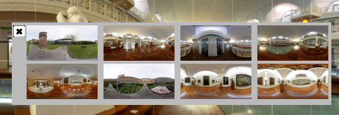
Le texte du lien créé sera le titre du panoramique selectionné par défaut (vous pouvez l'éditer)
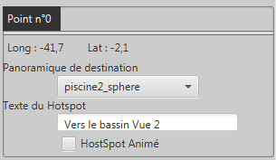 - Si vous vous êtes trompé vous pouvez supprimer le point en utilisant la combinaison (ctrl+clic gauche(PC) ou cmd+clic gauche(Mac) sur le point)
- Vous pouvez de la même manière créer un lien vers une image en utilisant la combinaison shift+clic gauche
dans l'interface la ligne rouge représente la direction du nord, la croix violette le point de vue d'entrée du panoramique les points jaune/rouge les hotspots vers les autres panoramiques.
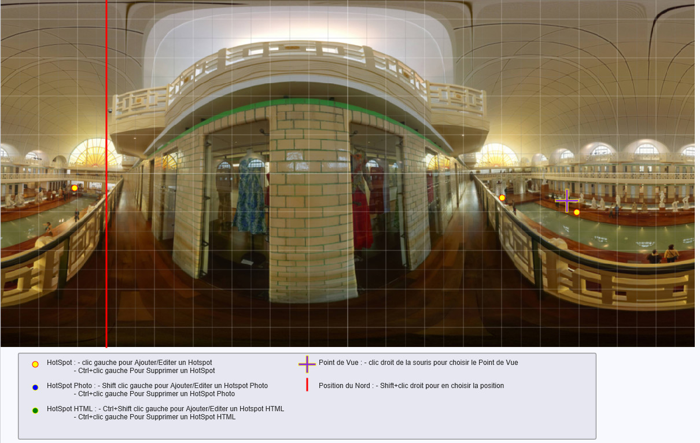 -
clic bouton gauche sur la vue panoramiques pour choisir l'emplacement du Hotspot
- Pour chacun des panoramiques vous pouvez également choisir le point de vue d'entrée (clic droit) (la direction dans laquelle se porte le regard lorsque le panoramique est chargé. Le centre de l'image est choisi par défaut.
- De même si vous comptez utiliser la boussole choisissez la position du nord (shift + clic droit)
Dans l'onglet Modèle d'interface
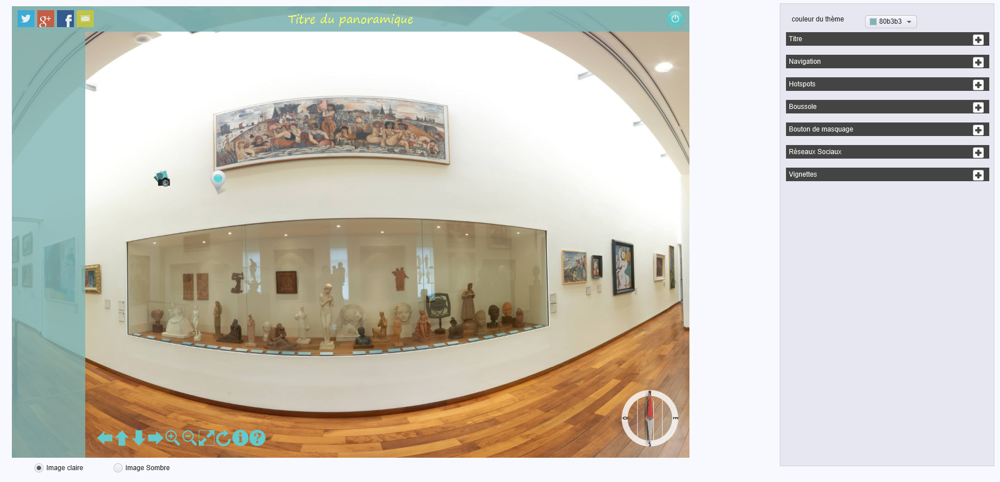-
Choisissez la couleur générale de l'interface. La couleur de chacun des éléments pourra ensuite être choisie individuellement.
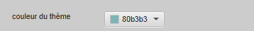 -
paramétrez le titre (choix de la police, de sa taille, couleurs, etc...)
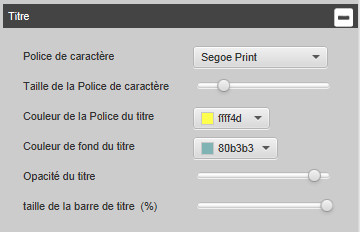 -
paramétrez la barre de navigation (forme des boutons, couleur, position, etc...)
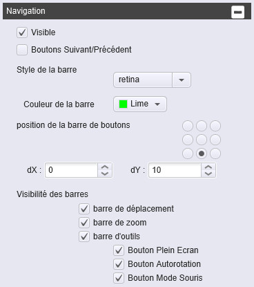 -
paramétrez les hotspots (forme et couleur)
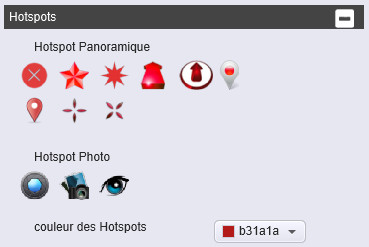 -
paramétrez la boussole (affichage, forme, position, etc...)
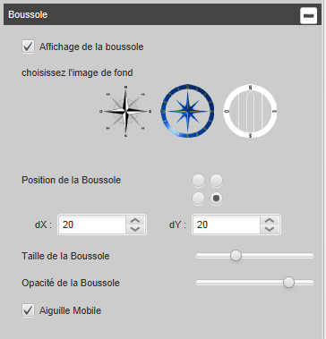 -
paramétrez le bouton de masquage (affichage, position, couleur, ainsi que les éléments à masquer par le bouton)
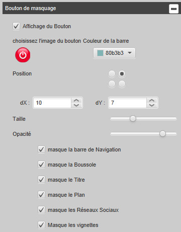 -
paramétrez les réseaux sociaux (affichage, choix des réseaux à afficher)
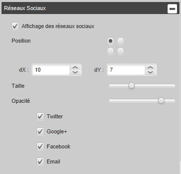 -
paramétrez l'affichage des vignettes des pnoramiques (position, couleur de fond, taille des vignettes)
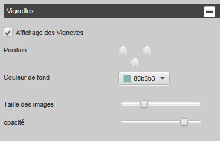
Vous pouvez sauvegarder le modèle que vous venez de créer pour une utilisation ultérieure en utilisant le menu modèles.
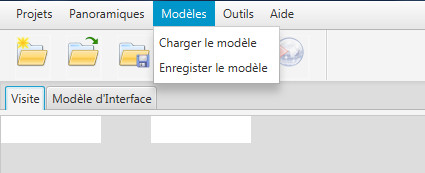Génération de la visite
Si vous n'avez pas encore sauvé votre visite faîtes le, puis générez votre visite en utilisant le menu visite (ou la combinaison de touche Ctrl+V(PC) ou Cmd+V(Mac)). La visite sera générée dans le repertoire de sauvegarde dans un sous-répertoire visite.
Une fois la génération effectuée, la visite sera ouverte dans votre navigateur préféré.
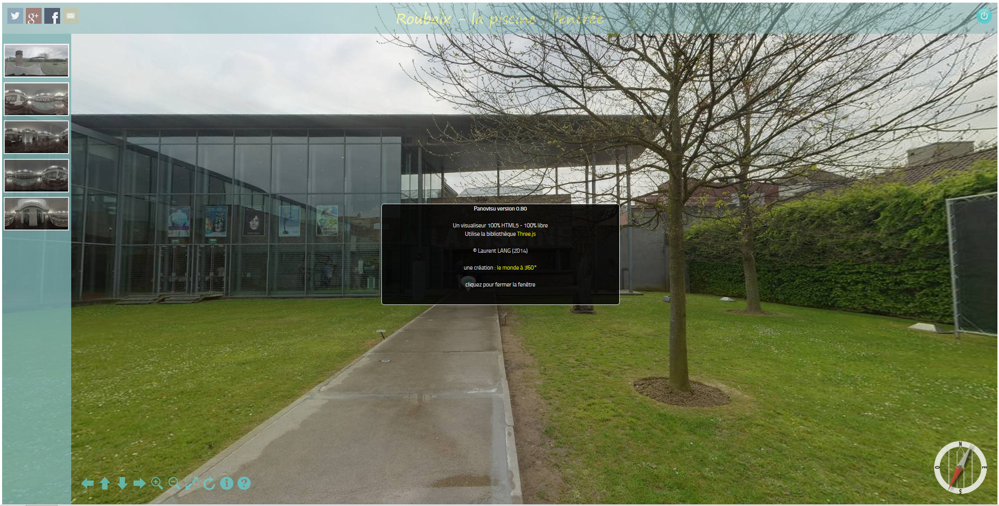Les Menus
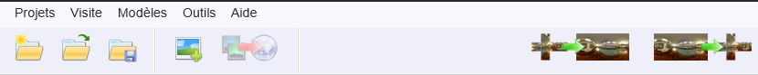Menu Projets
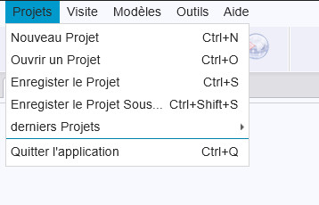Menu Panoramiques
Menu Modèles
Menu Outils
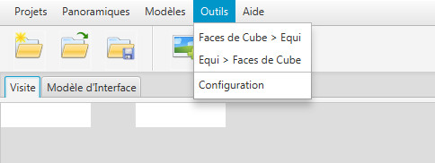Menu Aide

La barre de boutons
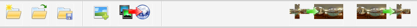L'éditeur de visite
Le panneau de la vue panoramique
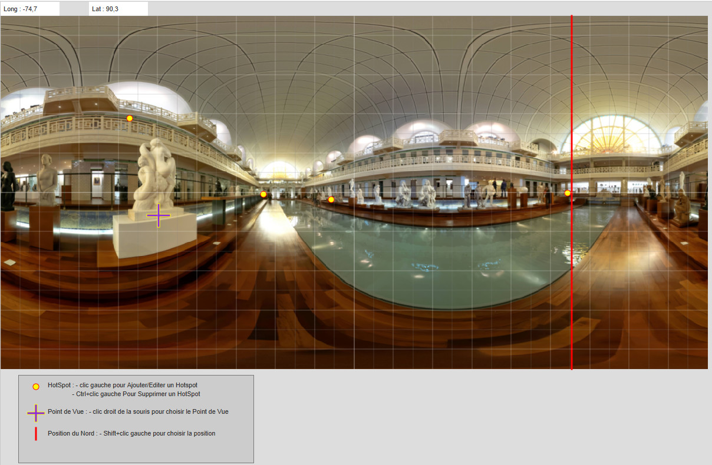La barre d'outils
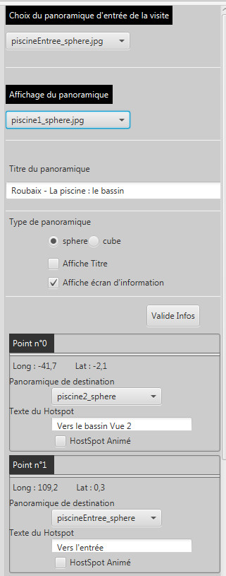Panoramique d'entrée
les paramètres du panoramique
Les HotSpots
L'éditeur d'interface
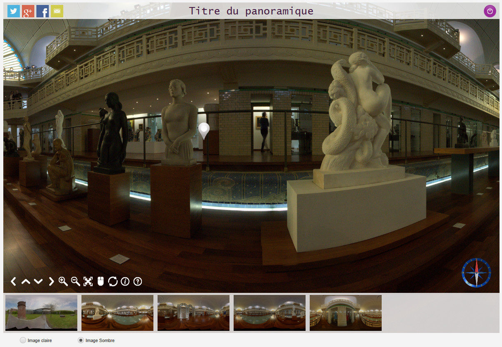
Couleur générale de l'interface
La barre de titre
La barre de navigation
Les Hotspots
La boussole
Le bouton de Masquage
Les réseaux Sociaux
Les vignettes
Les Outils
Les outils de transformation
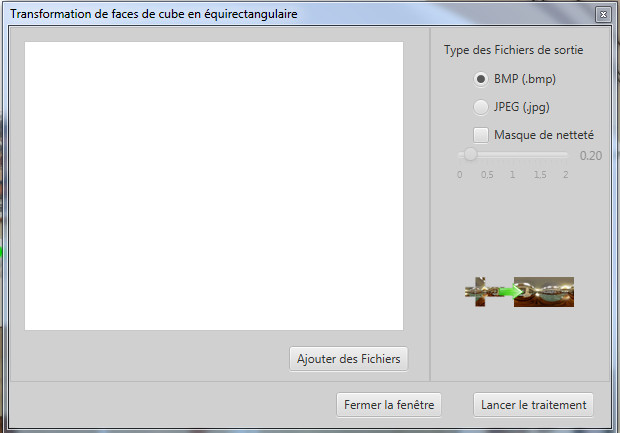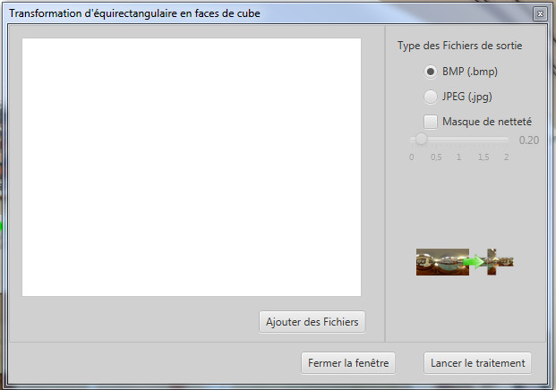